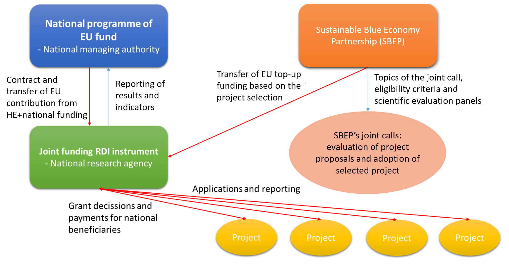
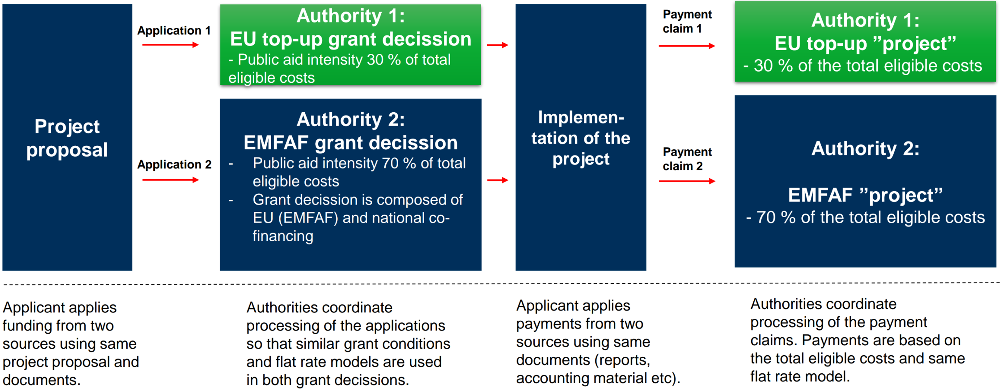

- Home
- Synergies Dashboard
Synergies Dashboard
One of the goals of the Sustainable Blue Economy Partnership (SBEP) is to facilitate its consortium members in benefiting from different financial resources in a synergistic manner, enabling the co-funding of research and innovation projects. This includes fostering collaboration to access various funding opportunities at both European Union (EU) and national/regional levels. SBEP has also implemented tailored guidance to help organisations from Member States and Associated Countries optimise administrative and management procedures to implement co-funding mechanisms.
This dashboard presents documentation, recommendations, and case studies to help streamline the use of different funding mechanisms, with particular attention to their relevance to SBEP’s Intervention Areas, aiming to maximize the Partnership's scientific, economic, and societal impact. At the same time, the insights presented here are overarching with other initiatives, extending beyond the Partnership focus.
This dashboard leverages from a collaborative learning process across representatives of EU, member states and regional institutions, both internal and external to the Partnership’s consortium, providing an exchange of frameworks, challenges, lessons learned, good practices, and proposed solutions, resulting in a comprehensive overview of up-to-date information on synergies of resources pertinent to the Partnership. For details about this collaborative work, see “SBEP’s support to capacity building”.
Downstream from this collaborative process, this dashboard consolidates this gathered knowledge in an accessible format aiming to support the practical implementation of these synergies. Specifically, we aim to support members of the Partnership Consortium to benefit from an optimal synergy of financial resources available for participants to (co)funded research and innovation (R&I) projects including through leveraging financial streams available in each member state, including: European Structural and Investment Funds (ESIF), the EU Regional Development Fund (ERDF), the European maritime, fisheries and Aquaculture fund (EMFAF), Next generation EU, and other relevant Programmes.
The contents presented here include showcasing successful stories on creating funding synergies at national level and explanation of how these funding synergies are put in place from an operational point of view, leveraging support within the partnership’s knowledge-sharing framework. Challenges identified prompt a proposed roadmap for resolution. Our approach emphasizes lessons learned over best practices, owing to the novelty and evolving nature of such practices.
The Commission Notice on Synergies between Horizon Europe (HE) and ERDFExternal link: Click here functions as a blueprint for synergy modalities applicable across EU programmes beyond HE and ERDF. These modalities include Seal of Excellence, transfers, cumulative funding, co-funded and institutionalised Partnerships, combined funding (teaming), and upstream/downstream synergies.
Given the Partnership's limitations in funding all R&I project-worthy proposals, tools such as the Seal of ExcellenceExternal link: Click here offer a pipeline for high-quality proposals. The Seal of Excellence is a quality label awarded to proposals submitted under a competitive call that have met specific excellence criteria but could not be funded due to budgetary limitations. It enhances their visibility and facilitates identification for receiving alternative support, either from EU or national funding sources.
The transfer between cohesion policy funds and Horizon Europe is a new synergy modality available in the 2021-2027 programming period. Transfers give an opportunity to
strengthen participation of MS in HE where it has been traditionally low and to improve their success rate;
boost projects in areas identified as priorities through smart specialization;
preserve administrative capacity at national/regional level in the selection and follow-up of R&I projects.
Allows pooling funding from two different funding instruments in a single operational project. Provision of no double funding applies.
European PartnershipsExternal link: Click here with Member States participation play a vital role in strengthening the European research landscape. They foster cross-border collaboration, align research and innovation agendas, enhance skills, and boost the absorption capacity of European businesses, while further structuring the European Research Area. A central aim of these Partnerships is to achieve scientific, managerial, and financial integration of national research programmes in their respective domains.
Partnerships, including SBEP, are key drivers for synergies between funding schemes, by bringing in and coordinating the use of resources available from EU and national instruments, programmes and funds. It is possible, for instance, to use European Structural an Investment Funds – ESIF (EAFRD, ESF, ERDF, etc.) – funds in the context of co-funded PartnershipsExternal link: Click here. Furthermore, collaboration between a Partnership and potential alternative funding streams may also extend to engagement with the management authorities overseeing the ESIFs.
|
European Partnership: Union with private and/or public partners that jointly support the development and implementation of an R&I programme:
|
|---|
Combined funding from a national, regional, EU or private source can take the form of the form of Teaming actions, or complementary projects. It may support for example the creation or modernisation of a centre of excellence in a widening country by teaming it up with a leading research institution (advanced partner) in a different country. Teaming actions are designated as a synergy action be the HE working programme and are expected to become an influential and meaningful bridge particularly between S3 and excellence in R&I, thereby strengthening the ERA. As such, teaming actions help maximise the benefits of R&I for society, the environment, and the economy, while reducing disparities among Member States and advancing EU goals.
The ERDF programme supports R&D projects that complement HE, albeit with a different set of eligible costs. The HE proposal must include a clear description of the complementary project supported by the ERDF or other funding sources.
This refers to streamlining activities between successive projects that build on each other. The EU, primarily through HE and ERDF programmes, provides a coordinated framework covering all steps of the R&I innovation process, from the “upstream” capacity-building and basic research to the “downstream” commercialisation and uptake of innovative solutions by private enterprises. This requires close collaboration between the relevant parts, particularly the EU and national authorities involved in the programming and implementation of HE and ERDF support.
In the context of European Partnerships, sequential upstream or downstream synergies, involving funding provided before or after a funded project, may take the form, for example, of the creation of preconditions and ecosystems facilitating participation in a Partnership, or of providing resources for the follow-up of funded projects through Partnership calls.
Intervention Areas of the Sustainable Blue Economy Partnership (SBEP)
Text here.
The Partnership is launching six co‑funded calls for research and innovation proposals over a seven‑year timeframe. The first three have already been launched:
- First SBEP Joint Transnational Co‑Funded Call: “The way forward: a thriving sustainable blue economy for a brighter future” , launched in .
- Second SBEP Joint Transnational Co‑Funded Call: “Unified paths to a climate‑neutral, sustainable, and resilient blue economy: engaging civil society, academia, policy, and industry” , launched in .
- Third SBEP Joint Transnational Co‑Funded Call: “Digitalisation and Innovation for Resilient Marine Ecosystems, Businesses, and Communities to Strengthen the EU Blue Economy’s Competitiveness” , launched in .
SBEP has dedicated an entire Work Package to supporting funding streamlining by information sharing and supporting additional activities beyond competitive calls. Concerning information provision, the Partnership has undertaken the following actions:
Analysis of several national and EU programmes that would be eligible for co-financing the institutions of the Partnership, improving synergies to reduce fragmentation and maximise the impact of research activities. This also included a desk analysis of the Common Provision Regulation (CPR);
Organisation of dedicated events and sessions, either presential or online;
Participation in events organised by other initiatives;
Dedicated task on uptake of projects results;
Direct contacts with partners and funding providers from various MS and AC, and the Commission (including e.g., DG MARE) to obtain specific information on available funding streams and their implementation;
Widening roadmap leading to the engagement of one regional authority (Emilia Romagna Region, Italy) in the Partnership Consortium as a funding organization contributing through Structural Funds;
Organisation of contents into THIS DASHBOARD.
“Additional Activities” in the context of SBEP and other European Partnerships refer to any activity that is distinct from and complements the financial support to third parties/transnational competitive calls, i.e. typically “in-house activities”.
Beside the launch of joint transnational calls for proposals, the Partnership is mandated to implement additional activities, including by mobilizing contributions different from in cash, to ensure reaching the strategic objectives of the Partnership. The implementation of such actions outside competitive calls will require specific technical advice and relevant capacity to foster long-term utilisation and integration of the national implementation dimensions.
In response, SBEP carried out an analysis on concrete options regarding the availability and in-kind involvement of infrastructures and other existing structured initiatives. This resulted, from the 2nd cycle of the Partnership, in the implementation of three new sub-taks to deploys this contribution, each with a specific focus on aligning
thematic annual programming (TAP),
monitoring programmes and
shared use of research infrastructures.
The Commission communication on Europe's 2040 climate target recognizes the need to invest in the research and demonstration, coordinating the EU and national R&I efforts, and strengthening efforts to bring innovations to the market and to scale them up. In this respect, the Commission communication underlines the need of further simplification throughout EU Programmes. EU Financial Regulation is needed for offering true one-stop shops for finance and funding opportunities, which would allow for pooling of resources, and accelerated and easier access to funds, eventually combining them with grants, reducing the number of ways to access support.
In consideration of the one-stop-shop model, it is imperative to streamline procedures within future EU legislation to effectively address the challenges associated with managing EU top-up funding alongside national EU funding. MS are individually responsible for the development of IT systems, resulting in the existence of diverse and unique systems across countries. Addressing this aspect of work may prove challenging. Hence, we propose the establishment of a specific funding instrument within the regulation, described below.
Preliminary proposal for a joint funding RDI instrument
To streamline the utilization of EU funds in international research activities and establish a simplified implementation model, the feasibility of creating a dedicated funding instrument for international joint-funded research activities, akin to the existing model utilized for InvestEU and financial instruments, should be evaluated. This initiative could be carried out by establishing a regulatory framework for an "international joint funding RDI instrument," which could be overseen by national/regional research funding agencies in accordance with their respective rules and procedures. Such an approach would enable the possibility of having a one-stop-shop for funding while avoiding double reporting requirements and challenges concerning timing.
The flowchart depicted in the figure below outlines a potential process for managing the "joint funding RDI instrument," and the following box presents an illustrative example of how this framework could be regulated in a future Common Provisions Regulation.
|

|
|
Regulatory framework: Example of how a “joint funding RDI instrument” could be regulated in the future CPR
|
|---|
Combined funding from a national, regional, EU or private source can take the form of the form of Teaming actions, or complementary projects. It may support for example the creation or modernisation of a centre of excellence in a widening country by teaming it up with a leading research institution (advanced partner) in a different country. Teaming actions are designated as a synergy action be the HE working programme and are expected to become an influential and meaningful bridge particularly between S3 and excellence in R&I, thereby strengthening the ERA. As such, teaming actions help maximise the benefits of R&I for society, the environment, and the economy, while reducing disparities among Member States and advancing EU goals.
The ERDF programme supports R&D projects that complement HE, albeit with a different set of eligible costs. The HE proposal must include a clear description of the complementary project supported by the ERDF or other funding sources.
This refers to streamlining activities between successive projects that build on each other. The EU, primarily through HE and ERDF programmes, provides a coordinated framework covering all steps of the R&I innovation process, from the “upstream” capacity-building and basic research to the “downstream” commercialisation and uptake of innovative solutions by private enterprises. This requires close collaboration between the relevant parts, particularly the EU and national authorities involved in the programming and implementation of HE and ERDF support.
In the context of European Partnerships, sequential upstream or downstream synergies, involving funding provided before or after a funded project, may take the form, for example, of the creation of preconditions and ecosystems facilitating participation in a Partnership, or of providing resources for the follow-up of funded projects through Partnership calls.
|
Summary of identified challenges for streamlining funding synergies between EU funds and co-funded research and innovation programmes
|
|---|
SBEP acknowledges the considerable challenges associated with enabling synergies between funding streams, which are largely tied to the varying contexts and capabilities of individual countries and national/regional administrations.
Member States determine how to leverage multiple funding streams for co-financing research projects. However, consistently identifying the most suitable mechanisms for co-funding organizations in collaborative projects alongside other entities is a major challenge.
Although guidelines are available in the Hõrizon Europe regulation, such as the provision of processes concerning ERDF in the HE Regulation, provided by the EC in 2022, the current EU regulation framework (CPR and fund specific regulations) does not establish any derogation to use EU funds in international R&D&I joint funding calls.
On the practical side, managing EU contributions from Horizon Europe funding alongside national EU co-funded programmes introduces significant complexities, primarily due to double reporting requirements. National/regional EU co-funded programmes are managed electronically within national/regional IT systems, posing challenges for seamless integration of HE funding contributions into existing electronic decision-making and payment systems. Consequently, Horizon Europe funding contributions must undergo separate management by distinct public bodies, exacerbating administrative burdens through duplicated decision-making and reporting processes. This pitfall places undue strain on both administrative entities and beneficiaries alike.
Another relevant aspect is the temporal constraints. Typically, research projects selected for funding span a minimum of three years. Considering that the eligibility period for current specific EU structural funds concludes by the end of 2029, all projects must be finalised and payments disbursed to the final beneficiaries by then. Consequently, research projects funded through national EU co-funded programmes should ideally commence by 2026 to ensure timely completion. However, delays in EU legislation often result in national EU co-funded programmes commencing 2-3 years later. Consequently, MS have only a brief window to utilize these programmes for joint research activities.
Managing co-funded European Partnerships poses additional challenges, particularly regarding ERDF national reporting on certified expenses. This includes varying co-funding rates across different European Partnerships, which depend on the Consortium Agreement among participants. Additionally, the final co-funding rate is often determined after the projects have been either selected, or even completed and reporting has concluded. Furthermore, the timelines for disbursing co-funding payments vary among European Partnerships.
To maximize available funds and accelerate progress while preventing the isolation of results within specific communities (e.g., specific target groups of ESIFs), it is essential to enhance dialogue and cooperation among various stakeholders, including between the business and scientific sectors, as well as across member states and regions. Achieving this level of synergies involves several key actions. As such it is relevant to understand “who is doing what” across Europe, and this may be facilitated by identifying projects with similar objectives among European Missions, Partnerships, Structural Funds and other mechanisms. For instance, the Portfolio analysisExternal link: https://op.europa.eu/en/publication-detail/-/publication/dfc5df4f-0073-11ee-87ec-01aa75ed71a1/language-en of the EU mission “Restore our Ocean and Waters by 2030” (European Commission 2023), and the Horizon 2020-Interreg Synergies Mapping ToolExternal link: https://dashboard.tech.ec.europa.eu/qs_digit_dashboard_mt/public/sense/app/77ebaa1f-43ff-4c4c-ab8f-a21b102259a0/sheet/371667d5-31a8-4cbb-b4ca-ece4bbcc02a8/state/analysis (which combines thematic and regional information in order to identify potential synergies between these two funding streams), may provide valuable insights to learn from and implement synergies effectively.
|
The Smart Specialization Strategy (S3) is adopted by EU Member States and regions to identify objectives, priorities and actions aimed at optimizing the impact of investments in research and innovation. This strategic approach focuses resources on areas with the highest potential for growth, with the overarching aim of maximizing outcomes, enhancing competitiveness, and fostering the creation of high-quality employment. |
|---|
To effectively implement synergies, a strategic alignment of objectives of different programmes (Smart Specialisation Strategies – S3 – & Operational Programmes) may be required. Smart Specialisation Strategies (S3) were introduced by the European Commission in 2010, when it called on national and regional governments to design strategies for research and innovation (R&I) to encourage all European regions to discover their competitive advantage. With Smart Specialisation, research and innovation were for the first time mainstreamed as tools for regional development.
Alignment of the Smart Specialisation Strategies (S3) is conditional to access funds in the case of DG REGIO, but not for DG MARE.
DG REGIO manages the EU Cohesion Policy Funds (ERDF, CF, ESF+, JTF). For the Cohesion PolicyExternal link: Click here, the Smart Specialisation Strategy is the reference; thus, investments must meet its prescribed criteria.
DG MARE has mobilized stakeholders to support the implementation of the Smart Specialisation Strategy for the Sustainable Blue Economy through cooperation. SBEP can serve as a pathway to this synergistic effort, by matching Intervention Areas relevant to the Smart Specialisation Strategy in different countries and regions. With both DG MARE and the Partnership having identified innovative priority research areas, it is thus possible to establish common areas of innovation that enable stakeholders to create interregional partnerships under the platform of the Smart Specialisation for Blue Economy.
Regarding EMFAF, which supports the EU Common Fisheries Policy (CFP), managed by DG MARE, its focus is on synergies among different funding schemes in order to provide connectivity and opportunities for stakeholders to address another fund to implement their Smart Specialisation Strategies.
Currently, some regions are expanding towards S4 (Smart Specialization Strategies for Sustainability) or S4+ (Smart Specialization Strategies for Sustainable and Inclusive Growth). This is acknowledged by SBEP, and will be capitalized for further co-designing the Partnership's strategy and implementation (SRIA and work plans).
|
|---|
Horizon Europe offers opportunities for co-financing with ERDF, ESF+, EMFAF, EAFRD, and JTF. As managing authorities of Member States oversee these programmes, it is essential that they understand how to implement co-financed projects under these schemes effectively while complying with the relevant rules and regulations.
The Commission Notice on Synergies between Horizon Europe (HE) and ERDFExternal link: https://eur-lex.europa.eu/legal-content/EN/TXT/?uri=uriserv%3AOJ.C_.2022.421.01.0007.01.ENG&toc=OJ%3AC%3A2022%3A421%3AFULL serves as a blueprint for aligning resources and objectives, underscoring the crucial role of European Partnerships in orchestrating resources across diverse EU and national programmes and funds. Additionally, the following boxes highlight relevant provisions of Horizon Europe Regulation Article 15External link: https://eur-lex.europa.eu/legal-content/EN/TXT/HTML/?uri=CELEX:32021R0695#art_15, and Cluster 6 of the Horizon Europe Work ProgrammeExternal link: https://research-and-innovation.ec.europa.eu/funding/funding-opportunities/funding-programmes-and-open-calls/horizon-europe/horizon-europe-work-programmes_en.
|
Horizon Europe Regulation Art. 15(3): “Financial contributions under programmes co-financed by the ERDF, the ESF+, the EMFAF and the EAFRD may be considered to be a contribution of the participating Member State to European Partnerships under points (b) and (c) of Article 10(1) of this Regulation, provided that the relevant provisions of the Common Provisions Regulation for 2021-2027 and the fund-specific regulations are complied with.”
|
|---|
|
Horizon Europe Work Programme (2025) - Cluster 6 To be more effective in achieving a positive impact, proposals should synergise with relevant Horizon Europe initiatives, including European Partnerships, Missionsand the Knowledge and Innovation Communities (KICs) of the European Institute of Innovation and Technology (EIT). Through Cluster 6, special attention will be given to ensuring cooperation between universities, scientific communities and industry, including SMEs, citizens and civil society and their representatives. This allows bridging gaps and reducing inequalities between genders, territories, generations and regional cultures, supporting women innovators and caring for the needs of young people in shaping Europe's future. In this context, applicants should consider and actively seek synergies with, and, where appropriate, possibilities for further funding from other R&I-relevant EU, national or regional programmes, such as the European Regional Development Fund (ERDF), the European Social Fund Plus (ESF+), the Just Transition Fund (JTF), the European Maritime Fisheries and Aquaculture Fund (EMFAF), the European Agricultural Fund for Rural Development (EAFRD), the LIFE Programme, InvestEU and private funds or financial instruments. |
|---|
The Invest EU Programme External link: https://investeu.europa.eu/investeu-programme_en supports sustainable investment, innovation and job creation in Europe. With the EU budget guarantee provided to International and National promotional banks, the InvestEU programme aims to trigger more than €372 billion in private investments to high EU policy priority areas.
Regulation (EU) 2021/523 of the European Parliament and of the Council of 24 March 2021External link: https://eur-lex.europa.eu/eli/reg/2021/523/oj establishes the InvestEU Programme and amends Regulation (EU) 2015/1017. Specific contents of this regulation are highlighted in the box below.
|
Regulation (EU) 2021/523 n. 4 “Member states (…) develop their own national multiannual investment strategies in support of those reform priorities. Those (…) priority investment projects that are to be supported by national funding, Union funding, or both. Those strategies should also use Union funding in a coherent manner and maximise the added value of the financial support to be received in particular from the European structural and investment funds, the Recovery and Resilience Facility established by Regulation (EU) 2021/241 of the European Parliament and of the Council and the InvestEU Programme”. Annex II includes “Areas eligible for financing and investment operations” into InvestEU Programme:
|
|---|
The current CPR sets specific rules for the allocation of national EU funding to the InvestEU Programme and to financial instruments. In the case of InvestEU, MS can reserve national programme funding to this specific purpose and transfer budget to the European Investment Bank group (EIB). The EIB then utilises this funding based on its rules and procedures. Similarly, MS can steer financing to so called “financial instruments”, entailing the establishment of a fund in which MS’s financial intermediate (e.g. bank) may provide loans, guarantees or equity investments. These financial instruments have specific rules and are managed outside of MS’ national programme IT systems.
|
Common Provisions Regulation, Article 14 “Use of the ERDF, the ESF+, the Cohesion Fund and the EMFAF delivered through the InvestEU Programme”
|
|---|
The Partnership will support projects that are EU taxonomy compliant and qualify for financing by the EIB under the InvestEU Programme.
The European Innovation Council (EIC) is another potential instrument for SBEP. It includes the Pathfinder Transitional Accelerator, targeting at least TRL 5 (technology/large scale prototype must have been tested and validated in a relevant environment).
The analysis of the complex landscape of funding mechanisms tailored to sources associated with the blue economy has showed that the most relevant instrument for the private component of the Partnership is the BlueInvest financing instrument External link: https://maritime-forum.ec.europa.eu/theme/investments/blueinvest_en.
Regarding private financing, BlueInvest engages in dialogues with over 80 private investorsExternal link: https://blueinvest-community.converve.io/upload/fck/file/Blueinvest-Investor-report-An-ocean-of-opportunities.pdf and has established an ecosystem aimed at bolstering blue economy startups and scaling-ups. A thorough comprehension of these mechanisms is beneficial for supporting SBEP co-funded projects in transitioning toward market uptake. Furthermore, exploring collaboration with DG MARE and BlueInvest to assess companies with high Technology Readiness Levels (TRLs) and assessing their potential integration within BlueInvest could be beneficial.
|
|---|
The Common Provisions Regulation External link: https://commission.europa.eu/funding-tenders/find-funding/funding-management-mode/common-provisions-regulation_en (CPR, Regulation (EU) 2021/1060 of the European Parliament and of the Council of 24 June 2021) is established to govern 8 EU funds alongside specific regulations pertaining to each fund. This regulatory framework delineates comprehensive guidelines for the programming, management, and oversight of these funds, encompassing various stages such as application, evaluation, selection, decision-making, payment processes, as well as reporting and control mechanisms. The delivery of these funds is shared with MS and regions. Together, they represent a third of the EU budget.
The 8 funds covered by the CPR are:
European Regional Development Fund (ERDF);
European Social Fund Plus (ESF+);
Cohesion Fund (CF);
Just Transition Fund (JTF);
European Maritime, Fisheries and Aquaculture Fund (EMFAF);
Asylum and Migration Fund (AMIF);
Internal Security Fund (ISF);
Border Management and Visa Instrument (BMVI).
The largest share of this budget is allocated to 5 common policy objectives:
a more competitive and smarter Europe by promoting innovative and smart economic transformation and regional ICT connectivity;
a greener, low-carbon transitioning towards a net zero carbon economy and resilient Europe by promoting clean and fair energy transition, green and blue investment, the circular economy, climate change mitigation and adaptation, risk prevention and management, and sustainable urban mobility;
a more connected Europe by enhancing mobility;
a more social and inclusive Europe implementing the European Pillar of Social Rights;
a Europe closer to citizens by fostering the sustainable and integrated development of all types of territories and local initiatives.
The CPR underlines the need to optimise the added value and uptake of co-financed international research activities. Synergies should be ensured with the Funds, other relevant instruments, namely Horizon Europe, and other international research programmes. These synergies should be achieved through user-friendly key mechanisms, namely the possibility of combining funding from different Union instruments in the same operation as long as double financing is avoided. Each Member State should have the flexibility to contribute to international research, development and innovation funding programmes’ joint calls, under certain conditions set out in the future CPR regulation.
|
Common Provisions Regulation “Member States and the Commission shall promote the coordination, complementarity and coherence between the Funds and other Union instruments and funds. They shall optimise mechanisms for coordination between those responsible to avoid duplication during planning and implementation. Accordingly, Member States and the Commission shall also take into account the relevant country-specific recommendations in the programming and implementation of the Funds.” “In order to optimise the added value from investments funded wholly or in part through the budget of the Union, synergies should be sought in particular between the Funds and other relevant instruments, including the Recovery and Resilience Facility and the Brexit Adjustment Reserve. Those synergies should be achieved through user-friendly key mechanisms, namely the recognition of flat rates for eligible costs from Horizon Europe for a similar operation and the possibility of combining funding from different Union instruments in the same operation as long as double financing is avoided. This Regulation should therefore set out rules for complementary financing from the Funds.” |
|---|
Four of the eight funds covered by the CPR, namely ERDF, ESF+, CF and JTF, are under the Cohesion Policy External link: https://ec.europa.eu/regional_policy/policy/what/investment-policy_en. To enhance synergies, the 2021-2027 Cohesion Policy has included provisions for simplifiedExternal link: https://ec.europa.eu/regional_policy/2021-2027_en selection procedures for the Seal of Excellence, as well as Horizon Europe co-funded and institutionalised Partnerships.
|
Preconditions for synergies between Horizon Europe and Cohesion Policy programmes:
|
|---|
The ESI Funds comprise of:
- the European Maritime, Fisheries and Aquaculture Fund (EMFAF);
- the European Regional Development Fund (ERDF);
- the European Social Fund (ESF+);
- the Cohesion Fund (CF);
- the European Agricultural Fund for Rural Development (EAFRD).
Regulation (EU) 2021/241 of the European Parliament and of the Council of 12 February 2021External link: https://eur-lex.europa.eu/eli/reg/2021/241/oj/eng establishes a Recovery and Resilience Facility Plan (RRF) and sets out the facility’s aims and the criteria for receiving funding. The RRF is the key instrument of NextGenerationEU, a temporary recovery instrument to support Europe's economic recovery from the coronavirus pandemic.
The Common Provisions Regulation clearly specifies the aim of having synergies between different funding sources. And it is possible to combine funding from different Union instruments in the same operation, as long as double financing is avoided. Yet, no specific procedural guidelines are provided for EMFAF in the regulations, despite it being a target of these synergies.
It is crucial that the funding managing authority in the MS/region adheres to the same procedures as those employed in regular project financing. In this context, three potential pitfalls must be considered when utilizing EMFAF in co-funded calls, concerning the (1) selection procedures for operations, (2) the coordination of calls for proposals, and (3) the implementation of EU top-up funding.
|
|---|
The European Maritime, Fisheries and Aquaculture Fund (EMFAF)External link: https://commission.europa.eu/strategy-and-policy/eu-budget/performance-and-reporting/programme-performance-statements/european-maritime-fisheries-and-aquaculture-fund-performance_en supports the EU common fisheries policy (CFP), the EU maritime policy and the EU agenda for international ocean governance. It provides financial support for developing innovative projects ensuring that aquatic and maritime resources are used sustainably. It also helps achieve the UN’s Sustainable Development Goal 14 (‘conserve and sustainably use the oceans, seas and marine resources’), to which the EU is committed. The EMFAF helps fulfil the objectives of the European Green Deal, i.e. the roadmap for the EU climate and environmental policies. It is complemented by specific funding for the European Fisheries Control Agency, for the sustainable fisheries partnership agreements (SFPAs) and for the EU membership to regional fisheries management organisations (RFMOs) and other international organisations.
The EMFAF focuses on enabling conditions for the development of a sustainable blue economy and on removing bottlenecks to facilitate investment in new markets, technologies and services. It supports:
maritime governance to coordinate human activities at sea in a sustainable manner (e.g. through ‘maritime spatial planning’);
the transfer and uptake of research, innovation and technology in private investment;
the development of maritime skills;
the dissemination of marine and maritime environmental and socio-economic data;
the development of project pipelines to leverage private investment.
The implementation of EMFAF varies significantly across MS. For instance, in some countries, such as Italy, it operates at the regional level. As such, there is no “one fits all” solution for a coordination framework. For instance, in Finland, where the managing authority of EMFAF is a SBEP partner, coordination in the scope of the Partnership is streamlined, particularly concerning call procedures. However, in other countries, SBEP may need to engage with local or regional entities to enable the implementation of calls and other actions. Despite the differences, there are common issues that may encourage managing authorities to exchange solutions and learn from one another, and here we aim to facilitate this process.
The following general principles of eligibility are applicable:
General Principle in the Common Provisions Regulation: The eligibility of expenditure is determined on the basis of national rules, except where specific rules are laid down in the Union legal framework.
General principles for shared management in the EMFAF: MS may support operations which:
Fall under the scope of the Priorities and Specific Objectives.
Are not explicitly ineligible.
Are in accordance with applicable Union law.
Ineligible operations and limitations are also specified in the EMFAF RegulationExternal link: http://data.europa.eu/eli/reg/2021/1139/oj. For instance, construction, acquisition, and importation of fishing vessels is ineligible, unless otherwise provided for in the regulation. There are also specific conditions regarding the capacity and engine of fishing vessels (see illustrative examples in the box below). As such, there might be no exemption for the case of R&I projects.
|
EMFAF sets detailed rules concerning operations related to fishing vessels. For instance, a research project focusing on energy transition within the fishing industry is restricted to utilizing existing fishing vessels, precluding for example the possibility of funding a public project aimed at prototyping a small-scale electric fishing vessel and conducting pilot tests. Similarly, research and development projects aimed at developing new engine solutions for fishing vessels must adhere to the same rigorous conditions as standard EMFAF private investment projects. Moreover, if the national fishing fleet fails to align with available fishing opportunities, the entire fishing segment becomes ineligible for funding. These regulations significantly limit the scope of potential research, development, and innovation actions for fishing vessels. |
|---|
The EMFAF programmes for 2021-2027External link: https://ec.europa.eu/regional_policy/2021-2027_en have an allocated budget of €6.108 billion, broken down as follows:
€5.311 billion (87%) implemented under shared management. This budget is provided through national programmes co-financed by EU budget and EU countries, for which the Common Provisions Regulation 2021-2027 is applicable. In order to use this shared management budget, MS must prepare national programmes (details in Subsection 3.5.1.2.1) that must be approved by the European Commission.
€797 million (13%) implemented under direct management. This amount is provided directly by the Commission. This budget is spent and managed by the European Commission. The Commission prepares annual work programmes which detail the allocation of this budget. These work programmes are discussed and approved in the EMFAF Committee, which is composed by experts from the MS.
The EMFAF has a set of four priorities pre-defined by the EU:
Priority 1. Fostering sustainable fisheries and the restoration and conservation of aquatic biological resources (51% of shared management budget);
Priority 2. Fostering sustainable aquaculture activities, and processing and marketing of fisheries and aquaculture products, thus contributing to food security in the Union (35% of shared management budget);
Priority 3. Enabling a sustainable blue economy in coastal, island and inland areas, and fostering the development of fishing and aquaculture communities (10% or shared management budget);
Priority 4. Strengthening international Ocean governance and enabling seas and oceans to be safe, secure, clean and sustainably managed. (2% of shared management budget).
Under the shared management, each of these four priorities has their own specific objectives, whereas the Commission has a different focus these priorities, and each priority has a set of scope items under direct management. For priorities 1 and 2, which cover by far most of the budget, and may be the main focus when seeking synergies between EMFAF and HE, their specific objectives under shared management and scope under direct management are listed in the table below
| Priority | Specific objectives under shared management | Scope under direct management |
|---|---|---|
| 1. Fostering sustainable fisheries and the restoration and conservation of aquatic biological resources |
|
|
| 2. Fostering sustainable aquaculture activities, and processing and marketing of fisheries and aquaculture products, thus contributing to food security in the Union |
|
|
It is important to consider the architectural framework (see the figure below) when strategizing the utilisation of EMFAF. EMFAF operates within a structured hierarchy comprising three key layers:
Priorities: These set the overarching direction.
Specific Objectives: Detailed in the EMFAF regulation, they further delineate the focus areas.
Types of Interventions: MS must specify where funds will be allocated.
Member States are tasked with preparing the union-level priority, which includes conducting a SWOT analysis, and identifying specific needs based on this analysis. Subsequently, they select specific objectives for inclusion in their operational programmes, and detail the types of actions to be funded, target beneficiaries, financial allocations, co-financing rates, and anticipated outputs and results.

|
|
Synergies with Horizon Europe:
|
|---|
The ERDF focuses, among other aspects, on the development and strengthening of regional and local R&I ecosystems, networks and industrial transformation, including support to building R&I capacities, to the take-up of results and to the rolling out of novel technologies and innovative and climate-friendly solutions from the framework programmes for R&I through the ERDF. Being one of the main investment instruments within the framework of the Cohesion Policy, it works to strengthen the economic, social and territorial cohesion of the European Union and correct imbalances between its regions, with 5 strategic priorities for 2021-2027 to make Europe smarter, greener, more connected, more social, and closer to its citizens.
Research, Technology, Development and Innovation (RTDI) interventions under the Partnership Agreement 2021-2027 are subject to the provisions of regulation (EU) 2021/1058 of the European Parliament and of the Council of 24 June 2021 on the European Regional Development Fund and on the Cohesion Fund.
Support to Partnerships via ERDF as a Member State contribution stands as a major incentive for the participation of regional actors and alignment with common EU priorities within HE Partnerships. Key considerations include:
ERDF may function as a MS contribution to European Partnerships, contingent upon compliance with relevant CPR-provisions and fund-specific regulations.
Bodies implementing the partnership must be designated as ERDF intermediate bodies, as stipulated by the CPR.
MS may decide to provide support directly to operations selected under the partnership, as stipulated by the CPR.
Specific administrative steps ensure compliance with the requirement to prevent double declaration of costs.
Alignment of S3 is an eligibility condition for the ERDF programmes (see box below).
|
Synergies within Co-Funded European Partnerships: practical illustrative example (ERDF)
|
|---|
Text here.
|
Template table
|
|---|
In the case of Finland, the synergistic implementation of Horizon Europe with EMFAF leverages on the country's pre-existing frameworks. These frameworks have previously enabled joint funding for projects, where, for example, a municipality contributes (with e.g., 20% of the funding) alongside with EMFAF (which would cover the remaining 80%). This arrangement involves two separate granting decisions. During the payment phase, the EMFAF authority verifies total costs and disburses the fund (80% of the amount in the current example), while the municipality's share is managed through a distinct financing stream.
The coordination between EMFAF and Horizon Europe in Finland follows a similar model. For instance, if the EU top-up funding is 30%, EMFAF can cover 70% of the total eligible costs. In Finland, the management of EU top-up funding falls under the jurisdiction of the Ministry of Agriculture and Forestry, a SBEP partner, which verifies total costs and covers e.g., 30% of them. Therefore, the implementation of this system represents a continuation of existing practices in Finland.
This concerns the procedure for selecting operations by the managing authority (the term ‘operation’ is used in the cohesion policy context). The CPR Art. 73 states that
|
“For the selection of operations, the managing authority shall establish and apply criteria and procedures which are non-discriminatory, transparent (…)” and “The criteria and procedures shall ensure that the operations to be selected are prioritised with a view to maximising the contribution of Union funding towards the achievement of the objectives of the programme.” |
|---|
In conformity, the Finland national EMFAF programme established the following four strategic objectives:
Supporting sustainable growth in the fisheries sector
Safeguarding the preconditions for primary production
Accelerating innovations and renewal of the fisheries sector
Strong focus on environmental issues
Additionally, and particularly aligned with objective 3 above, the Finnish national EMFAF programme strategy states that it is their aim to increase international cooperation in research and development, and funding from the EMFAF programme may complement the objectives of HE. Also, this funding can be used as national contribution, including for international calls. It is therefore clearly stated that the Finland EMFAF programme intends to use national funds to boost this kind of joint international calls.
| Finnish EMFAF programme’s strategy: “The aim is also to increase international cooperation in R&D. The Horizon Europe 2021-2027 offers opportunities for international cooperation, including in fisheries. Funding from the EMFAF programme may complement the objectives of Horizon Europe. Synergies will be sought with the EU Mission Restore Our Ocean and Waters by 2030, in particular as regards aquaculture and the multifunctionality of marine areas. EMFAF funding can be used as a national contribution for international calls.” |
|---|
Moreover, in the description of types of actions concerning R&D&I, it was included that funding can be used as a national contribution to international calls, such that the Finnish EMFAF Programme can participate and contribute to joint calls with Horizon Europe.
| "Funding can be used as a national contribution to international coordinated calls, so that the programme can finance the costs of Finnish actors (e.g. Nordic calls and EU Horizon)". |
|---|
Regarding selection criteria and methodology, the monitoring committee has adopted the national methodology for selection of operations and selection criteria, where it is stated the possibilities of using either continuous calls or fixed-term application procedures. In case of fixed-term application procedure, a project can be selected based on the selection criteria in accordance with the objectives of the call. As such, targeted calls can be launched and specific criteria can be adopted for this kind of call. Also, a specific selection criterion concerning the selection in an international call was introduced for this kind of co-funded application.
|
National methodology for selection of operations: “Where the selection of a project is based on a fixed-term application procedure, the selection of projects shall be based on the selection criteria in accordance with the objectives of the call. The objective of the call for applications and the selection criteria applicable to it, as well as the programme measure concerning the application procedure, shall be indicated in the call for applications.” Specific selection criteria for co-funded applications: “The project has been selected for funding in an international call.” |
|---|
Regarding the calls for proposals, the CPR states that the managing authority must publish a website concerning the fund and, among other obligations, they must also publish a timetable of the planned calls for proposals that must be updated accordingly.
|
CPR, Article 49 “1. The managing authority shall ensure that, within 6 months of the decision approving the programme, there is a website where information on programmes under its responsibility is available, covering the programme’s objectives, activities, available funding opportunities and achievements.” “2. The managing authority shall ensure the publication on the website referred to in paragraph 1 (…) of a timetable of the planned calls for proposals, that is updated at least three times a year (…).” |
|---|
The following figure presents an example of a timeline with EMFAF as a co-financing instrument with SBEP 1st call for proposals which follows the selection procedure as specified in the CPR. Prior to the launch of SBEP call, the local managing authorities would 1) reserve a specific budget for the concerning topics. Then, once SBEP call is launched, or even beforehand, the concerning authority would 2) publish the timetable of the planned calls for proposals in the EMFAF website. Afterwards, once the selection procedure on the SBEP side is in its late phase, with the selection of proposals, then the managing authority would 3) open a target call for proposals that were selected in the SBEP call.

EMFAF projects often involve additional public financing, a common practice seen, for instance, in Finland where national projects may receive funding from municipalities or research institutes within the same operational project. In the context of EU legislation, there are no restrictions on combining EMFAF and EU top-up funding (or other combination of EU funding streams), provided that there is no duplication of financing within a single project.
EU top-up funding cannot be managed within the Finnish EMFAF IT system. Consequently, they have opted to employ a model where the EMFAF intermediate body (ELY centres) responsible for all funding decisions within their fund, oversees the grant decision-making model regarding the EMFAF.
Under this planned model, schematized in the figure below, the EMFAF intermediate body grants the EMFAF funding rate, e.g., 70%, while e.g., the Ministry of Agriculture and Forestry handles EU top-up funding and disburses it to beneficiaries (30%). Payments to beneficiaries are calculated based on total costs using a real cost model. Beneficiaries apply for funding from both the intermediate body and the ministry, and both entities verify the total cost to avoid double financing.
To enhance additional funding synergies, Finland has identified three desired outcomes to pursue: 1) communication and dissemination of results within the sector and among stakeholders, 2) transformation of research results into practice in enterprises and private sector, and 3) facilitation of public-private partnerships.
To boost innovations, Finland national EMFAF relies first on traditional methods to finance public and collective development projects, spanning from local to national projects. These funds are allocated towards research infrastructure, including the construction of new facilities, and co-funded international joint projects. Additionally, Finland has introduced innovative financing products tailored for enterprises. Among these is the ‘innovation voucher,’ offering a modest sum, such as €5.000,00, with minimal administrative burdens. Enterprises can utilize this fund with flexibility to boost novel ideas within their operations. Beyond this, a more substantial financing option exists in the form of development funding for companies, with a maximum allocation of €200.000,00. Furthermore, at the enterprise level, Finland provides opportunities for increased aid intensity for investments conducted in collaboration with research institutes, thereby fostering robust public-private partnerships at a tangible level. Lastly, they have initiated the ’Fisheries Innovation Programmes’ in previous programmes.
The underlying principle behind these innovation programmes was a shift from project-based development approaches to a target-oriented and continuous long-term development model. In a traditional development approach, calls for proposals are opened, projects are initiated as planned, but often encounter the need for further research or development, leading to a cycle of new projects. This process often causes a decline in trust and commitment among stakeholders, along with time gaps and discontinuities in development efforts. To address it, Finland transitioned towards a ‘learning networks’ model. Here, main actors from both public and private sectors collaborate to design and agree upon shared visions and goals. Through continuous collaboration, trust and commitment among these actors grow, allowing for sustained progress towards common objectives. Ideally, this cooperative approach fosters innovation and utilization of innovations collectively, surpassing the innovation levels achievable through traditional methods. After approximately five years of implementation, these innovation programmes have yielded favourable outcomes. For instance, the ’Aquaculture Innovation Programme’ successfully engaged relevant national institutes, including research institutions, universities, and aquaculture companies.
There is a commitment to continue these innovation programmes, which are built upon robust public-private partnerships, and the focus will be on digital and green transition and sustainable growth of the fisheries sector. Five innovation programmes will be launched, one of them centred on fisheries (the ‘Fisheries Environmental Programme’). These programmes will formulate and regularly update Research & Development & Innovation agendas, guiding funding and other national research activities towards jointly identified goals aligned with the overarching vision.
Primarily funded by (European) EMFAF funds, these programmes also leverage other national and international financing opportunities to achieve their objectives comprehensively. In the case of Finland, it is anticipated that these platforms will serve to enhance synergies among various funding instruments, particularly by disseminating information and catalysing additional research and innovation activities at the national level.
The regional strategy for innovation is shaped by the regional Smart Specialisation Strategy (S3) which Emilia-Romagna (Italy) has drawn by crossing the grand socio-technical challenges with the most relevant value chains, resulting in 15 cross-cutting thematic areas, with Blue Growth being among them.
The Emilia-Romagna ERDF Regional Programme (ERDF RP)External link: https://fesr.regione.emilia-romagna.it/erdf for the 2021-2027 period is the programming document that defines strategy and operations for the use of funds allocated to the Region by the ERDF. In close coherence with main European and national strategies identifying green and digital transition as core pillars for economic and social growth, the Regional Programme Strategy follows the priorities outlined in the national Partnership Agreement and the main regional framework strategies amongst which the Regional Pact for Work and Climate. It has four main priorities – Policy Objectives, each of which has various Specific Objectives and different implementing Actions:
Research, innovation, competitiveness (detailed in the subsection below)
Sustainability, decarbonisation, biodiversity, resilience
Sustainable mobility and air quality
Attractiveness, cohesion, local development.
Additionally, Technical Assistance is a fundamental element for an effective Programme management.
The Regional Programme supports a revitalisation process that combines quality of work, increased productivity and added value, technological, environmental and social innovation, attractiveness and international openness. Thus, it helps the regional system on its path towards green transition and digital transformation, helping to reduce economic, social, gender, generational and territorial inequalities.
Over €1 billion – €1.024.200.000 – are planned for the implementation of the 2021-2027 ERDF Emilia-Romagna Regional Programme, a third of which will be allocated to fight against climate change.
A total of €530 million is available for this implementation action, corresponding to 52% of 2021-2027 ERDF Regional Programme financial allocation. It addresses advanced research and innovation policy, with a focus on local specificities, and responds to three major challenges:
innovative and smart transition, closely related to the new S3 Strategy, which indicates the guidelines for the regional research and innovation policy;
promoting digital transformation to improve opportunities for economic growth and social innovation, stimulating a cultural change and making digital a new territorial peculiarity;
boosting competitiveness within the regional production system by focusing on labour, the value of enterprise and the entrepreneurial and widespread pluralism of SMEs.
The Emilia-Romagna Region (Regione Emilia Romagna) is one of the 38 funding organizations of the second SBEP Joint Transnational Co-Funded Call “Unified paths to a climate-neutral, sustainable, and resilient blue economy: engaging civil society, academia, policy, and industry”, launched in February 2024. As per specified in the Call documents, the Emilia-Romagna Region underscores the inclusion of EMFAF as a co-funding stream.
To materialize this type co-funding scheme, coherence and complementarity should be ensured, specifically:
Coordination of the strategic priorities of the different funding programmes from their conception to promote a common vision;
Adoption of a strategic approach in the use of European funding.
Additionally, for this form of synergy,
the rules of the respective programme shall apply to each contribution;
cumulative funding must not exceed total eligible costs;
the support provided by the different programmes can be calculated pro-rata;
the conditions of support for beneficiaries are illustrated in a specific document.
As such, the project shall be consistent with the strategy, contents and specific objective of the Emilia-Romagna ERDF 2021-2027 Regional Programme, and the Emilia-Romagna Smart Specialization Strategy 2021-2027, as specified in the text of the second SBEP Joint Transnational Co-Funded Call.
The National Recovery and Resilience Plan (NRRP) of Italy is based on Next Generation EU, a programme that provides investments and reforms to accelerate the green and digital transition, improve worker training, and achieve gender, territorial, and generational equality. All the investments and reforms contained in the NRRP are divided in 6 specific missions, subdivided in specific components.
Within the framework of NRRP, the Ministry of Enterprises and Made in Italy (MIMIT) received €200 million to fund Mission 4 (Education and Research), Component 2 (From Research to Enterprise), Investment 2.2 (Horizon Europe Partnerships), and allocated this budget to seven European partnerships, especially digital and green partnerships, including SBEP.
The MIMIT participates in SBEP as national funding organization. In the first call (2023) it provided €10 million for contribution to the call and €800 thousand for maximum funding per awarded project. For the second call (2024), MIMIT withdrew the participation due to uncertain procedure of costs reporting towards the EU granting authority, not guaranteeing the full eligibility of funding.
The transfer between cohesion policy funds and Horizon Europe is one of the new possibilities available in the 2021-2027 programming period in the context of synergies between EU funding sources.
Malta has been the first MS to make use of this possibility, by asking to transfer €5 million from ERDF to HE between 2023 and 2027. As a result of the transfer, for the first 2023 batch of transfer, five Maltese ERA fellowships, initially not selected for funding by HE due to lack of sufficient budget, will now be financed thanks to the ERDF resources that Malta’s authorities decided to transfer to HE. These are the first projects funded with the transfer from ERDF to HE. The Grant Agreements for these 5 projects were signed in February 2024, following the normal HE project cycle.
These projects will support the strengthening of the Maltese R&I system and will help to attract new talent in the country as the University of Malta will be able to host five additional researchers.
Development planning for the 2021-2027 programming period is primarily based on the Strategy for Smart Specialization established at the national and regional levels, and directs all RTDI interventions funded by the ERDF.
The The General Secretariat for Research and Innovation (GSRI)External link: https://gsri.gov.gr/en/programming-periods/ is tasked with designing RTDI interventions under the 2021-2027 Programming Period, and in this context participates in
Designing the Smart Specialization Strategy 2021-2027 in cooperation with the General Secretariat for Industry and under the coordination of the General Secretariat of Public Investment and NSRF, in conformity with Article 36 of Law 4712/2020.
Designing the RTDI interventions under the “Competitiveness” Operational Programme 2021-2027, which is the principal financial instrument to support research and innovation during this Programming Period.
The strategic objectives set for the Smart Specialization Strategy 2021-2027 are:
Production of New Knowledge;
Commercialization and diffusion of Knowledge;
Technological Transformation of the Greek Productive Sector – Innovation adoption;
Internationalization – Penetration into Global Value Chains.
The GSRI (General Secretariat for Research and Innovation) is responsible for implementing RTDI actions under the “Greece 2.0” National Recovery and Resilience Plan. Recovery Fund actions, with a budget of €444 million, addresses country-specific research and innovation needs which are not covered by the Partnership Agreement for regulatory reasons, such as basic research, or are related to important RTDI infrastructures with financial requirements exceeding the available PA budget, or result from geographical restrictions imposed by the PA that create insurmountable obstacles in terms of funding allocation.
Elevate GreeceExternal link: https://elevategreece.gov.gr/ represents a noteworthy example of synergy between RRF and National funding. It is an initiative launched by the Greek Government with a mission to identify promising startups and support their growth, in order to ultimately build a robust innovation ecosystem. The initiative provides a digital gate through which Greek startups can apply requesting to be officially accredited by competent State Ministry (Ministry of Development & Investments –GSRI). The National Startup Registry is the official record of startups in Greece. It aims at monitoring startup entrepreneurship progress based on specific KPIs, at supporting them with benefits and incentives, and to operate as a dashboard of metrics to attract investors from Greece and abroad.
The Research and Innovation Foundation (RIF) administers SBEP’s Joint Transnational Co-Funded Calls (JTCs) for Proposals in Cyprus, where they are co-financed by the Republic of Cyprus and the European Regional Development Fund (ERDF) under the Operational Programme “Thalia (ΘΑλΕΙΑ) 2021-2027”. Through this scheme, Cyprus has co-funded the first and second of SBEP’s JTCs. These calls fall under Priority 1: “Competitive, Smart and Digital Economy” and the Specific Objective (1i): “Developing and enhancing research and innovation capacities and the uptake of advanced technologies.” Furthermore, they are part of the “European Partnerships” Programme within the framework of the “RESTART 2016-2020” Programmes for Research, Technological Development and Innovation. RIF has established a unified set of rules (where possible) and a single electronic platformExternal link: https://iris.research.org.cy/#!/calls to streamline the application process, regardless of the funding source. Also, close co-operation and co-ordination between all national stakeholders has been encouraged to counter the challenges in implementing co-funding schemes.
The design of RESTART Programmes 2016-2020 focuses on particular objectives, as well as on the Priority Sectors identified through the Smart Specialisation Strategy for Cyprus (S3Cy). At the same time, it is part of the Operational Programme “Competitiveness and Sustainable Development 2014-2020”, which is the development strategy of Cyprus for the utilisation of the resources of ERDF within the framework of Priority Axis 1: “Strengthening the Competitiveness of Cyprus Economy”. The multiannual legal and regulatory framework of the RESTART Programmes 2016-2020 are aligned with the Smart Specialization Strategy (2015 strategy, revised in 2023).
The Center Regional Coordination and Development Commission (Comissão de Coordenação e Desenvolvimento Regional do Centro, CCDRC) is participating in several European Partnerships using European Regional Development Fund (ERDF) resources, allocated from the Regional Programme Centro 2030. This includes mobilizing ERDF to co-fund R&I calls from European Partnerships, including SBEP’s Joint Transnational Calls (JTC). Initial implementation of this funding scheme presented challenges, and operational issues have also arisen subsequently. Nevertheless, the instrument has been successfully applied, although within a limited timeframe. This funding scheme is operationalized through the following actions:
The process starts at the strategic level, including defining which partnerships to join and ensuring strategic alignment (S3). Since some Partnerships were approved late within the 2021–2027 ERDF programming period, a timing issue arises
Once strategic decisions are made, the next step is to identify priority areas for support under each JTC and define budget allocations, with the need to take into consideration that the regional programme has its own priorities and calls to manage, and the relevance of interregional collaboration in strategic areas;
The JTC is launched. The proposal selection process includes eligibility checks by each funding organisation and a Partnership-level evaluation of proposals;
After funding decisions are made at the Partnership level, a regional ERDF call is opened by CCDRC. The selection process includes a second, formal eligibility check. Potential issues include time lags of several months between the two calls (i.e., the JTC and the regional call), possible changes in eligibility conditions between the first and second checks, and delays in the project execution.
In addition, ERDF has been used to generate synergies with other instruments managed at European level. A notable example is the Seal of Excellence, which provides a streamlined mechanism for support. Furthermore, results can be leveraged with complementary funding, for example to support increasing the TRL of projects previously funded by H2020 or HE (downstream synergy). This is achieved through articulation with national funds — CCDR Centro has a MoU with the national agency (FCT), which funds European Partnerships — and through the design of national and regional calls that promote synergies at different levels, going beyond the Seal of Excellence.
The Madeira-Azores-Canarias European Territorial Cooperation Programme 2021-2027 (INTERREG MAC 2021-2027) area is comprised of three European outermost regions – the Azores, Madeira and the Canary Islands – belonging to two Member States, Portugal and Spain, and seven third countries – Cape Verde, Ivory Coast, Gambia, Ghana, Mauritania, Senegal and São Tomé and Príncipe. The ERDF co-funding rate is 85% of the total eligible cost of a project.
In accordance with Article 3.4 of Regulation (EU) 2021/1059 on specific provisions for the European territorial cooperation goal, INTERREG MAC is part of strand 4 of the INTERREG programmes, referred to as INTERREG D and aimed at the EU Outermost regions. INTERREG D programmes promote cooperation among the outermost regions, as well as with overseas countries and territories (OCTs) or third countries, neighbouring partners and regional integration and cooperation organisations, to facilitate their regional integration and harmonious development in their region.
The MAC programme seeks synergies and complementarity with other Community funds and instruments. The unique nature of the cooperation area excludes any risk of overlap with other EU programmes and instruments, given the difficult access to several of these programmes for the outermost regions due to their special characteristics. The MAC programme is thus presented as a complementary programme, which enables the target Outermost Regions and their partners to develop actions that do not fit into other European instruments, while strengthening their capacity to access them.
In the framework of cooperation among outermost regions, as well as with third countries or neighbouring partners, calls for proposals may be launched for combined funding under the ERDF and the Neighbourhood, Development and International Cooperation Instrument (NDICI). The Commission has included a specific financial allocation of €10 million financed by the NDICI fund to the MAC programme, in order to support the African countries participating in the programme to strengthen their cooperation with the outermost regions of the Union under the MAC programme.
To this end, the NDICI instrument will contribute to actions implemented by the Managing Authority through joint ERDF/NDICI calls. Where appropriate, another modality could be used with the agreement of the European Commission and the Monitoring Committee.
The joint calls will cover the following priorities:
Priority: 1 – Smart MAC: Improving the competitiveness of companies thorough innovative and smart economic transformation: NDICI allocation of €4 million;
Priority: 2 – Green MAC: Ecological transition support for the development of a green and blue economy, fighting climate change, risk and disaster prevention and management: NDICI allocation of €6 million
The conditions for the implementation of this total contribution of €10 million, which will be under indirect management in accordance with Article 55(3)(b) of Regulation (EU)2021/1059, shall be determined by an agreement concluded between the Commission and the Managing Authority.
The MAC Programme envisages synergies with Horizon Europe in four key strategic orientations:
promoting digital and green transition,
circular economy,
sustainable management of natural resources and
enhancing resilience to disasters.
Projects will focus on the most promising sectors, especially the sustainable blue economy, tourism or bioeconomy. Projects having been awarded the Seal of Excellence will receive particular attention and will be taken into account for compatibility with State aid rules in the case of SME participation.
The MAC programme also complements actions co-financed by other Structural and Investment Funds. This includes ERDF itself, through ERDF Regional Operational Programmes for the Canary Islands, the Azores and Madeira.
The MAC programme is committed to boosting the economic dynamism of the area by leveraging its competitive factors. One of these is the region’s rich terrestrial and marine biodiversity, which underpins the commitment to the blue and the green economy.
Regarding the blue economy, the MAC can complement actions co-financed by the European Maritime, Fisheries and Aquaculture Fund (EMFAF), and Horizon Europe’s Mission Restore our Ocean and Waters. Projects will encourage entrepreneurship and competitiveness in this sector from a sustainable perspective, promoting renewable and carbon-neutral technologies and developing innovative solutions.
Canary Islands
Complementarity between these different funds in the Canary Islands will be guaranteed through a Funds Coordination Commission made up of all the representatives of the Government of the Canary Islands in matters related to the European Union. This Commission will oversee the coordination of aid and grants financed totally or partially from Community funds and will serve as an exchange of good practices between the different ESI funds (ERDF, ESF, EAFRD and EMFAF).
The MAC complements the ERDF Operational Programme of the Canary Islands through the Smart MAC and Green MAC Priorities, although the MAC component focuses on the development and transfer of knowledge to third partner countries, seeking business opportunities and increasing economic and trade relations between Europe and Africa, fostering the economic and social development across the cooperation area.
Concerning ESF+ Operational Programme, the roles of Smart MAC and Green MAC Priorities emphasize aspects geared towards job creation through the revitalisation of the productive fabric: the Smart MAC Priority focuses on applied research and support for SMEs; the Green MAC Priority focuses on promoting the green and blue economy, as well as the circular economy, through actions that encourage the creation of companies in these sectors. In addition, the Governance MAC Priority includes the capitalisation of the results obtained in previous programmes, with a view to encouraging the reuse and exploitation of accumulated knowledge and its practical application.
Madeira and Azores
The Autonomous Region of Madeira (ARM), in preparing and managing the two ERDF-supported programmes (MAC and the ERDF Regional Programme for Madeira), will seek better alignment, particularly regarding eligible areas, ensuring non-duplication of actions, complementarity and synergies, nature safeguarding, and the specificities, characteristics, fields of action and types of actions of the investments to be supported.
The Autonomous Region of the Azores (ARA), in the negotiation and preparation phase of the ERDF Azores 2030 programme, has sought to enhance synergies with the INTERREG VI-D MAC programme, especially for the Smart and Green Priorities.
The regional governments of the ARM and the ARA, as Managing Authorities in their ERDF regional operational programmes, and as regional representatives in the Management and Monitoring Committees and Regional Auditors in the INTERREG MAC 2021-2027 programme, will ensure, within their competences, the non-duplication of interventions and support, and the complementarity and synergies between programmes, taking into account the characteristics and specificities of each project, their nature, areas of intervention and type of actions.
In the Azores, the Regional Directorate for Science, Innovation and Development (Direção Regional da Ciência, Inovação e Desenvolvimento – DRCTD, formerly the Regional Directorate for Science and Technology – DRCT) may complement the 85% co-financing provided by the European Regional Development Fund (ERDF) under MAC by granting 15% co-funding. This support is available to eligible local entities that are part of the Azores Scientific and Technological System (Sistema Científico e Tecnológico dos Açores – SCTA), and the co-funding amount per project is calculated based on the total co-financeable contribution of the participating regional entities (i.e., only the portion of the project executed by eligible regional entities can be covered).
Entities seeking the 15% co-funding from DRCTD must submit their request in parallel with the submission of project proposals under the MAC Programme. Eligible projects must fall under one of the programme’s investment priorities, namely Smart MAC and Green MAC. Submitted projects are evaluated against the thematic areas defined in the Azores RIS3 2022–2027. DRCTD carries out a simplified assessment to determine whether the project aligns with at least one priority area and one transversal area of Azores RIS3. Only projects deemed aligned will receive a declaration of support, which is required for submission under the MAC 2021–2027 call.
The Co-Fund Azores 2030 scheme offers financial support as a regional counterpart for R&D and Innovation (RD&I) projects approved under the Azores 2030 Programme. The Azores 2030 Programme is funded by the European Funds ERDF and ESF+, for the 2021–2027 programming period. It covers various aspects of public policies aimed at smart economic growth, the promotion of qualified employment, social cohesion, mobility as a pillar of economic and social cohesion, environmental sustainability and resilience to climate change, and the digitalization and accessibility of public administration.
The Co-Fund Azores 2030 support is available to eligible local entities that are part of the Azores Scientific and Technological System (Sistema Científico e Tecnológico dos Açores – SCTA) that have projects approved under the Azores 2030 Programme. The scheme is managed by the Azores Regional Directorate for Science, Innovation and Development (Direção Regional da Ciência, Inovação e Desenvolvimento – DRCID). Applications to Co-Fund Azores 2030 can only be submitted once a project has already been approved under the Azores 2030 Programme. Funding is provided in the form of a non-reimbursable grant, set at a fixed rate of 15% of the total eligible project cost as approved under Azores 2030. This contribution must be applied exclusively to eligible expenses validated by the Azores 2030 Programme and may not be used to cover non-eligible costs.
Co-Fund Azores 2030 aims to facilitate broader participation of SCTA entities in calls under the Azores 2030 Programme, particularly within Priority 1A – Competitiveness, Research, Development and Innovation, and under Specific Objective 1.1 – Developing and strengthening research and innovation capacities and the uptake of advanced technologies. By co-financing the regional counterpart, this scheme helps leverage investment in R&D across the Region, strengthening scientific activity, capacity-building, and the growth of the SCTA and its performance indicators.
Under the ERDF-supported programme “Smart growth, digitalization and financial instruments”, Measure “Integration of the national RDI ecosystem into the European and international Research Area”, Romania finances projects aimed at creating synergies with Horizon Europe actions and other European programs. Projects selected in Horizon Europe calls receive complementary support, and those that have received the Seal of Excellence within Horizon Europe are no longer scientifically evaluated but are verified for their contribution and consistency with the programme objectives, their inclusion in S3 areas and eligibility for ERDF-type expenditures. Romania adopts a country-level centralized approach, rather than a regional one.
The Slovak Centre of Scientific and Technical Information (SCSTI)/Centrum vedecko-technických informácií SR (CVTISR) contributes to SBEP’s Third SBEP Joint Transnational Co-Funded Call “Digitalisation and Innovation for Resilient Marine Ecosystems Businesses, and Communities to Strengthen the EU Blue Economy’s Competitiveness” through the allocation of Structural Funds and JTF. The funded Slovak project participants under this scheme must ensure that:
All their incurred expenditures comply with the provisions of the State aid Scheme to Support Partnerships in the Field of Research, Development and Innovation under the Slovak Programme;
Their proposed activities are in accordance with the national strategic framework, specifically the Strategy for Financing the ERDF, ESF+, CF, JTF, and EMFAF 2021–2027;
The proposed project activities are in line with the priorities defined in the Research and Innovation Strategy for Smart Specialisation of the Slovak Republic 2021-2027 (SK RIS3 2021+), which serves as the strategic framework for research, development and innovation investment.
Horizon Europe is also actively supporting the implementation of funding synergies within calls for proposals. Here we highlight specific calls under the Destination “Improved Access to Excellence”, which is part of the “Widening participation and strengthening the European Research Area 2023-2025” work programme. This Destination addresses “improving access to excellence” through a portfolio of complementary actions that aim to build up R&I capacities in Widening countries, as well as through national and regional R&I reforms and investments, to enable them to advance to the competitive edge at European and international level.
The 2021-2027 Work Programme of the Destination “Improved Access to Excellence” includes seven calls. Three are outlined below for their specific contribution to synergies between funding streams.
This action is a EU Synergy grant , as the funding for projects under this topic is provided by more than one source. Specifically, the project must have a source of funding complementary to the Horizon Europe funding (e.g., national and/or regional funding, European funding, such as from Cohesion policy programmes, or private sources). Its total amount must at least equal the total requested Horizon Europe contribution.
The project proposals undergo a joint evaluation of both project parts funded under Horizon Europe and under any chosen complementary source of funding, such as from Cohesion Policy programmes. The operations supported by a complementary source of funding must comply with the scope of the supporting programme, and they must provide an effective contribution to the achievement of programme’s specific objectives. In addition, when Cohesion policy funding is mobilised, it must be consistent with the relevant Smart Specialisation Strategy (S3). Seals of Excellence are awarded to applications exceeding all of the evaluation thresholds set out in the work programme, but cannot be funded due to lack of budget available to the call.
Synergies between Horizon Europe and the cohesion policy programmes, mainly ERDF, including INTERREG, but also the Resilience and Recovery Fund (RRF), are instrumental for widening countries to catch up in their R&I performance and to reduce the innovation divide in Europe. Although such synergies are already addressed in the Teaming and Excellence Hubs actions these instruments do not capture the full range of possible synergies and need to be complemented by a dedicated scheme.
This pilot call offers opportunities to incentivise the concrete realisation of particularly promising sequential synergies in two different pathways either supporting the upstream synergy mode (a) or downstream synergy mode (b) where the former is focusing on human resources development and internationalisation and the latter on valorisation and upscaling of research results towards marketable solutions.
The purpose of this action is to provide support for additional efforts required for setting up the interfaces between two different funding systems where major barriers still occur due to the mismatches of regional versus European approach, consortium vs single beneficiary funding and Horizon thematic priorities vs national/regional smart specialisation. Consortia should decide at proposal level which of the two aforementioned pathways is applicable for their needs. This will also influence the composition of the applicant consortium and the choice of funded activities.
Excellence Hubs are part of the European Excellence InitiativeExternal link: https://rea.ec.europa.eu/funding-and-grants/horizon-europe-widening-participation-and-spreading-excellence/european-excellence-initiative_enand complement the science-oriented schemes Teaming, Twinning, ERA Chairs and the European Excellence Initiative for universities by a dedicated innovation component. Excellence Hubs focus on innovation by allowing innovation ecosystems in Widening countries and beyond, to team up and create better linkages between academia, business, government and society. This fosters a real place-based innovation culture in Widening countries based on a strategic agenda aligned with regional or national Smart Specialisation Strategies. In this context, synergies are sought with the programme parts on European Innovation Ecosystems, EIC pathfinder and the European Institute of Innovation & Technology (EIT) as well as the initiative ‘Partnerships for Regional Innovation’ run by the Joint Research Centre (JRC). The excellence hubs are the basis in Widening countries of the pan-European Innovation Ecosystem of the new Innovation Agenda for Europe.
Unlike Teaming projects that are centred around a single beneficiary, Excellence Hubs are networks of place-based innovation ecosystems in Widening countries involving larger communities of actors in a regional context based on the quadruple helix principle. The call allows to provide financial support to third parties in the form of grants, especially for the support of start-ups and SMEs. Also, it enables the realisation of actions (pilots and demonstrators) that must be financed by other sources, in particular programmes co-financed by the ERDF, INTERREG, IPA or similar.
...